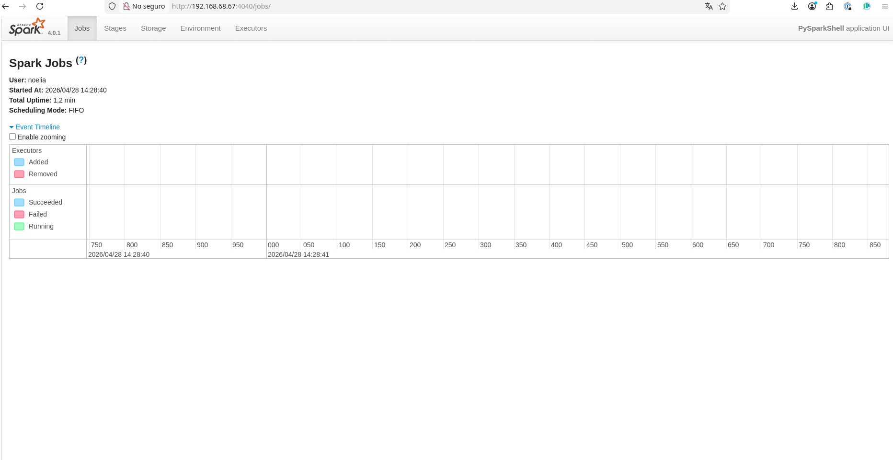
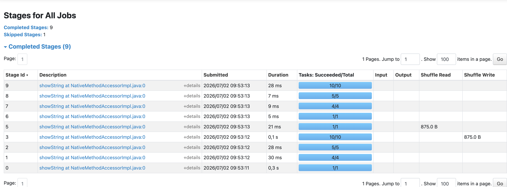

Monitorización y configuración de Spark
INTRODUCCIÓN
La monitorización y correcta configuración de Apache Spark son aspectos fundamentales para garantizar rendimiento, estabilidad y eficiencia en entornos de procesamiento distribuido. Una mala configuración puede provocar cuellos de botella, consumo excesivo de memoria, tiempos elevados de ejecución o incluso fallos de aplicación.
Apache Spark genera una gran cantidad de información durante la ejecución de aplicaciones distribuidas. Esta información se materializa en forma de logs y eventos, que permiten monitorizar la ejecución, detectar errores, analizar el rendimiento y auditar procesos.
La correcta gestión de estos elementos es fundamental en entornos de procesamiento distribuido, ya que facilita la identificación de problemas y la optimización de las aplicaciones.
CONTENIDO
Diferencia entre logs y eventos
LogsLos logs son registros textuales generados por los distintos componentes de Spark, principalmente el Driver y los Executors.
Sus principales características son:
- Formato generalmente no estructurado.
- Uso orientado a depuración y diagnóstico.
- Incluyen niveles de severidad como INFO, WARN, ERROR y DEBUG.
INFO TaskSetManager: Starting task 0.0 in stage 1.0
WARN Executor: Lost task 3.0 due to node failure
ERROR Executor: Exception in task
Los eventos son registros estructurados que describen acciones internas del sistema durante la ejecución de una aplicación Spark.
Sus principales características son:
- Suelen almacenarse en formato JSON.
- Están diseñados para ser analizados automáticamente.
- Son utilizados por herramientas como Spark UI para reconstruir la ejecución de una aplicación.
{
"Event": "SparkListenerTaskEnd",
"Stage ID": 1,
"Task Info": {
"Task ID": 10,
"Launch Time": 123456789
}
}
Sistema de logging en Spark
Spark utiliza Log4j como sistema de logging. Este framework permite configurar el nivel de detalle de los logs, el destino de salida y el formato de los mensajes.
Gracias a esta configuración es posible adaptar la salida de logs al entorno de ejecución, diferenciando entre entornos de desarrollo, pruebas y producción.
Puedes encontrar más inforamción sobre este framewok en este enlace.
Configuración de logs
La configuración de logs suele realizarse mediante un archivo denominado log4j.properties.
log4j.rootCategory=INFO, console
log4j.appender.console=org.apache.log4j.ConsoleAppender
log4j.appender.console.layout=org.apache.log4j.PatternLayout
log4j.appender.console.layout.ConversionPattern=%d{yy/MM/dd HH:mm:ss} %p %c{1}: %m%n
También es posible reducir el nivel de detalle de los mensajes generados por Spark:
log4j.logger.org.apache.spark=ERROR
Esta configuración permite reducir el ruido en consola y centrarse únicamente en errores relevantes.
Event Logging en Spark
Spark permite almacenar eventos de ejecución mediante el sistema de Event Logs. Estos eventos contienen información estructurada sobre la ejecución de jobs, stages y tasks.
Para activar el registro de eventos pueden utilizarse las siguientes propiedades:
spark.eventLog.enabled=true
spark.eventLog.dir=/tmp/spark-events
El directorio indicado debe ser accesible por la aplicación Spark y puede encontrarse en el sistema de ficheros local, HDFS u otro almacenamiento compatible.
Spark UI y análisis de eventos
Los eventos generados por Spark son utilizados por Spark UI para mostrar información detallada sobre la ejecución de una aplicación.
Spark UI permite visualizar:
- Jobs ejecutados.
- Stages generados.
- Tasks lanzadas.
- Tiempo de ejecución.
- Uso de memoria.
- Operaciones de shuffle.
- Errores producidos durante la ejecución.
Esta herramienta resulta especialmente útil para comprender cómo Spark distribuye el trabajo y para detectar posibles cuellos de botella.
Flujo de eventos en Spark
El flujo general de eventos en Spark puede describirse de la siguiente forma:
- El Driver ejecuta la aplicación Spark.
- Durante la ejecución se generan eventos internos.
- Los eventos se almacenan en el directorio configurado.
- Spark UI consume esta información.
- El usuario puede visualizar métricas y detalles de ejecución.
Uso práctico en entornos de streaming
En aplicaciones de Spark Structured Streaming, los logs y eventos son especialmente importantes, ya que permiten observar el comportamiento de los micro-batches y detectar problemas en tiempo real.
Mediante los logs es posible identificar errores relacionados con:
- Lectura de datos.
- Parsing de JSON.
- Problemas de esquema.
- Fallos en la escritura de resultados.
- Terminación inesperada de consultas streaming.
WARN StreamingQueryManager: Query terminated with exception
Por su parte, los eventos permiten analizar métricas como latencia, número de registros procesados, duración de cada micro-batch y estado de la consulta.
Buenas prácticas
Al trabajar con logs y eventos en Spark, es recomendable aplicar las siguientes buenas prácticas:
- Ajustar el nivel de logs según el entorno de ejecución.
- Utilizar niveles WARN o ERROR en producción para reducir ruido.
- Separar los logs del Driver y de los Executors.
- Persistir los eventos de ejecución mediante
spark.eventLog.enabled. - Configurar correctamente el directorio de eventos.
- Revisar Spark UI durante el desarrollo y pruebas.
- Integrar los logs con herramientas externas de monitorización cuando sea necesario.
CONCLUSIÓN
La monitorización y configuración de Spark son elementos esenciales para obtener un rendimiento óptimo. La comprensión de métricas, configuración de memoria, paralelismo y optimización adaptativa permite ajustar aplicaciones a distintos entornos y cargas de trabajo.
Los logs y eventos en Spark son elementos fundamentales para comprender el comportamiento interno de las aplicaciones distribuidas. Mientras que los logs permiten diagnosticar errores y revisar mensajes generados por los componentes del sistema, los eventos proporcionan una visión estructurada de la ejecución.
Su correcta configuración y análisis permite mejorar la observabilidad, detectar problemas de rendimiento y optimizar aplicaciones Spark, especialmente en escenarios de procesamiento en streaming.
EJERCICIO RESUELTO
Monitorización de una aplicación Spark desde Spark UI
En este ejercicio se ejecutará una pequeña aplicación Spark para observar su comportamiento desde Spark UI y comprobar la generación de event logs.
El objetivo no es realizar un análisis complejo, sino identificar cómo Spark organiza una aplicación en jobs, stages y tasks.
Escenario del ejercicio
Se utilizará un pequeño conjunto de datos de películas creado en memoria. La aplicación realizará varias operaciones sobre un DataFrame para que Spark genere información observable desde la interfaz web.
Pasos del ejercicio
- Crear el directorio donde Spark almacenará los eventos.
- Ejecutar la aplicación activando los event logs.
- Abrir Spark UI durante la ejecución.
- Identificar los jobs, stages y tasks generados.
- Comprobar que se han creado ficheros de eventos en el directorio configurado.
Preparación del directorio de eventos
mkdir -p /tmp/spark-eventsEjecución de la aplicación
spark-submit \
--master "local[*]" \
--conf spark.eventLog.enabled=true \
--conf spark.eventLog.dir=file:///tmp/spark-events \
M2T4L1_ejercicio.pyAcceso a Spark UI
Mientras la aplicación se encuentra en ejecución, Spark UI suele estar disponible en:
http://localhost:4040Desde esta interfaz se pueden revisar los jobs ejecutados, los stages generados y las tasks lanzadas por Spark.
Comprobación de los event logs
Al finalizar la ejecución, puede comprobarse que Spark ha generado ficheros de eventos:
ls -lh /tmp/spark-eventsResultado esperado
El alumno debe observar que una aplicación aparentemente sencilla genera varios elementos internos:
- Uno o varios jobs.
- Stages asociados a las transformaciones y acciones.
- Tasks ejecutadas en paralelo.
- Eventos almacenados en el directorio configurado.

Figura 1: Vista de logs de una aplicación Spark

Figura 2: Detalle de configuración de logs en Spark
Este ejercicio permite relacionar la teoría de la lección con una comprobación práctica: Spark no solo ejecuta código, sino que registra información estructurada que puede utilizarse para monitorizar, diagnosticar y optimizar aplicaciones.